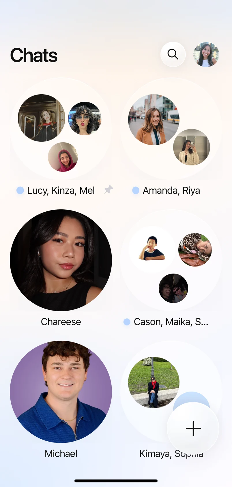
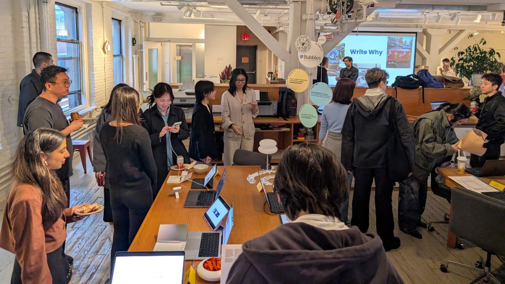
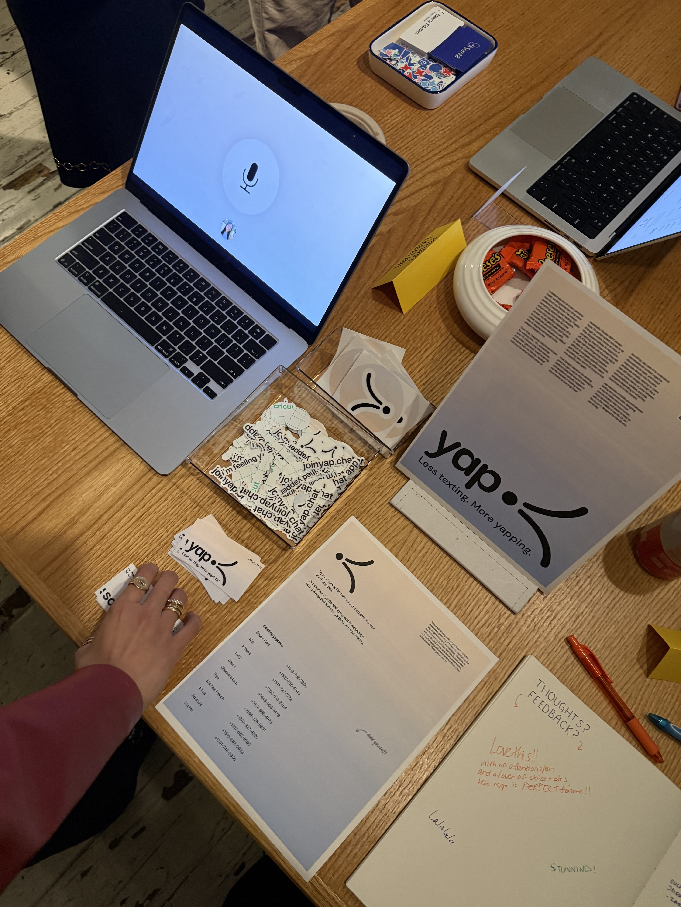
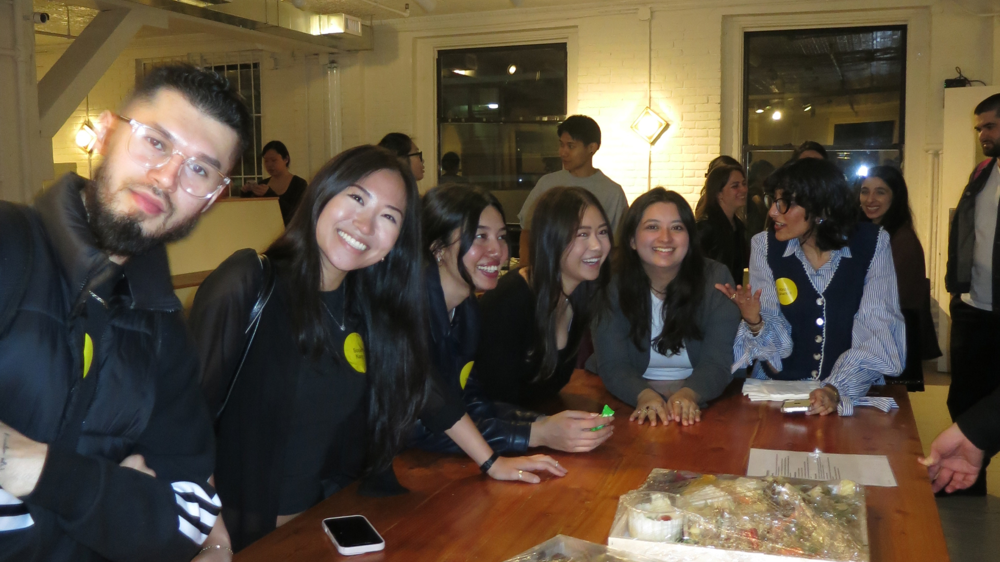
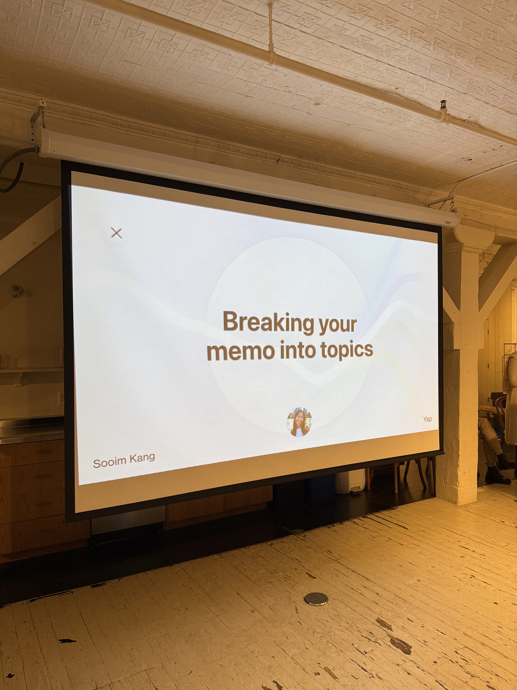

Voice-first PWA · 0→1 · 2026
yap is a voice group chat where AI splits long memos into topics, so friends can reply to one at a time. Designed, built, and launched solo in six weeks.
Problem
Every way we “yap” today breaks down somewhere.
Friends want to catch up the way they talk: long, rambling, in their own voice. Every tool fails somewhere.
Calling
Everyone has to be free at the same time.
Texting
Long thoughts get cut down to the functional parts.
Voice memos
Five topics buried in one recording, hard to answer one.
Opportunity
How might we make asynchronous voice conversations feel as natural and easy to follow as real-life conversations?
Solution
Talk once. Friends reply one topic at a time.
yap makes the topic, not the memo, the unit of a voice chat. It finds where the subject changes and gives each topic its own clip and thread. Friends hear only what’s new and reply to the part they care about.


The topic is the unit
Each topic gets its own clip, label, and thread, so every reply has a place to go.
AI organizes. It doesn’t rewrite.
The model labels topics and finds the cuts. It never summarizes: you hear the sender’s own voice.
Nothing between a friend and a reply
Friends join from a text link, in the browser. No App Store, no install.
Core features
Three features turn a voice dump into a conversation.
One memo, start to finish: the sender talks, friends catch up, and replies land in the right topic.
Feature 01
Blab all at once. AI finds the topics and cuts the audio.
Record one long memo. yap finds where the subject changes and cuts the recording there, so each topic arrives as its own labeled clip.
Feature 02
Catch up in seconds, one topic at a time.
New topics come first. Tap one to hear just that part. Now Playing keeps whoever is talking at the center.
Feature 03
Replies thread under the topic they answer.
Open a topic to hear its replies in order, then reply with your voice. Your answer lands in that topic, not at the bottom of the chat.
Join
Sign up from the welcome screen, then bring friends in by text.
New users sign in with their number and the code iOS autofills from Messages. Friends already on yap join a chat instantly; anyone else gets a text invite. No App Store, no install.


Demo
Don’t take my word for it. Try it.
This is the real app, running my chats with friends. Open a chat, play a topic, and leave a yap of your own.


Iterations
I tested three directions with 30 people, then kept what landed.
Before building, I made three quick flows in Figma Make, each around a different idea, and put them in front of 30 people. None was right on its own, so the shipped design keeps the best of each.

What resonated
Replies nested under the topic they answer. This became topic threads.
What didn’t
A transcript under every message. Reading got in the way of listening.

What resonated
Chat cards in All Chats, a recording screen distinct from listening, and a count of segments left.
Didn’t make the final build
“Mentions you.” It tested well but didn’t fit the timeline.

What resonated
Members floating on screen, like a live stream. Carried into Now Playing.
Didn’t make the final build
Showing who’s live right now.


Topic beats person
Testers preferred sorting a conversation by topic, not by person or group.
Listeners want the final say
People wanted to choose what to play and what to skip.
Show what’s heard and what’s left
Every topic shows how much has played and what remains.
Keep transcripts out of the chat
yap is for listening, so the chat shows clips, not text.
Build
I designed yap in Figma, then built and shipped it myself with coding agents.
No engineering handoff. I built yap in six weeks with Claude Code as my main collaborator, plus Cursor and Codex. I made the product calls, reviewed every change, and deployed it myself.
Stack
One memo, end to end: from a text message to a threaded reply.
The browser records, a serverless function runs the AI, Supabase syncs every chat, and Twilio texts people back in. I shipped a PWA, not native iOS: push notifications needed Apple Developer setup that wouldn’t clear in six weeks.
A friend’s first yap, end to end
AI
I designed the contract between the model and the product.
Models are good at judgment and bad at precision. So the model decides where a topic starts, and code decides exactly where to cut. Every other AI decision follows from that split.
One topic change, cut two ways
01
A contract, not prose
The model returns a label and the topic’s first words, copied verbatim. Words can be checked against the transcript. A guessed time can’t.
02
The context a listener has
Each request carries the chat’s open threads and what you just played, so a reply lands in the thread it answers.
03
A defined outcome for every failure
A fallback model, JSON repair, and sentence splits. The worst case is a memo that arrives as one topic. It’s never lost.
Sync
The hardest part wasn’t the AI. It was getting a memo onto everyone’s phone.
A yap only works if the memo lands in every friend’s chat, on their own phone, and they know it’s there. Supabase holds chats, memos, topics, and who has heard what, in realtime. When a memo lands, a queued job texts everyone else through Twilio, with retries.
It held up at Demo Day: people sent yaps from their own phones, and friends got the text with the memo waiting.
What one memo becomes in Supabase
Design
I designed the system in Figma, prototyped it, then handed it to the agents through the Figma MCP.
A small component library came first, and every screen is built from it. I prototyped the full flow before any code existed. The agents read the frames through the Figma MCP, and I sent back any build that drifted from its frame.
Created a reusable component library
Assembled screens with established components
 OnboardingCore screens
OnboardingCore screensPrototyped user flows

Handed design over to the agents through the Figma MCP

Define
I wrote the rules the agents worked from, the same way I’d write a spec for a team.
The repo opens with an agent operating guide, a style contract, a product brief, and recipes. The rules are product decisions: no fake flows, every control works, and messaging works even with AI off.
The spec the agents built from
Testing & debugging
Real memos are rambling. The first versions broke on them.
I tested virtually first, watching friends use yap on calls while I fixed things live, then in person. Two failures shaped the product most.

Virtual testing
In-person testing
Bug 01
The AI merged topics, or reworded what people said.
On long memos, the model returned one giant topic, or paraphrased so the app couldn’t find where topics started in the audio.
The fix: each topic starts with words copied verbatim, and code looks up their timestamps. A long memo that still comes back as one topic is split at sentences.
>Segmentation breaks on long memos in api/process-audio.js. segmentTranscript() returns one segment for a clear 3-topic memo, and when it does split, the model paraphrases, so rebuildSegmentTranscripts() can’t match segments back to the transcript.
1. Update the JSON schema: each segment returns label, excerpt, and start_anchor, the first 3–10 words copied verbatim. Max 6 segments; prefer fewer when a boundary is ambiguous.
2. Resolve boundaries in code: match each start_anchor against the transcribeWordTimestamps() output and cut there. Ignore the model’s start_ms/end_ms.
3. If a long memo still comes back as one segment, fall back to heuristicSplitMemo() at sentence breaks.
Pipeline only, no UI changes. Run the 3-topic memo in demo/data.json and paste each segment with its ms range.
>
Bug 02
Tapping one topic played the whole memo.
A memo’s topics share one audio file, each playing its own window. When windows were missing or spanned the whole file, every topic played from 0:00.
The fix: yap rebuilds the windows by transcript length, then seeks to each topic’s start and stops at its end.
>Tapping a topic card plays the whole memo. Every topic in a memo shares one audio_url, but its topic_segments rows have start_ms/end_ms missing or set to the full duration, so PlaybackController starts at 0:00 and never stops.
1. In js/core/data.js, add repairVoiceMemoSegmentPlayWindows(): when sibling segments have missing or full-length windows, redistribute them by transcript length.
2. In PlaybackController (js/features/chat.js), seek to activeMeta.startAt before play() and pause on timeupdate at endAt. Never fall back to the full file.
Playback and data only. Repro with a 3-topic memo and log each segment’s startAt/endAt.
>
Launch
I launched yap live at MPS Communication Design Demo Day 2026.
A voice app needs a physical presence, so I ran a yap station: the live app, stickers, the poster, and a notebook for feedback.


Feedback
People got it in one sentence.
An attendee’s roundup of standout Demo Day projects called yap the “voice inbox for extreme yappers.”
that voice inbox got me fam
— Trong Hatachi (@Trong_Hatachi) May 16, 2026
Reflection
Agents let one designer ship a full product. The design work moved into the rules, the reviews, and the edge cases.
yap didn’t stop at a prototype: at Demo Day, people signed up on the spot and sent real yaps. The hardest problems weren’t screens. They were what the model is allowed to do, and what happens when it’s wrong.


Takeaway · Users
Voice is easy to send and hard to receive. The sender’s convenience was the listener’s burden, so that’s where the design had to start.
Takeaway · Building with models
Give the model judgment, not the final say.